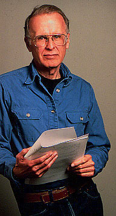

| Inventos |
Función |
Inventor |
|
Computadora Mecanica |
Hacer calculos matematicos, además esta era programable. |
Konrad Zuse |
|
Aereoplano |
Dirigible capaz de controlarse de forma mecanica y mantener vuelo estable. |
Hermanos Wright |
|
Radio |
Es un medio de comuniocación el cual al ser enviada una señal atravez de una antena, esas ondas al llegar a el dispositivo reproduce el sonido que el emisor envio. |
Nikola Tesla y Guglielmo Marconi |
|
Televisión |
Medio de comunicación capaz de emitir imagenes y sonido en una pantalla, funciona al igual que la radio por radiofrecuencias, en la actualidad este invento es uno de los más usados. |
John Logie Baird |
|
Fortran |
Es el primer lenguaje de progrmación de alto nivel capaz de darle instrucciones a las maquinas de forma más sencilla y con una sintaxis muy similar a los idiomas humanos. |
John Backus  |